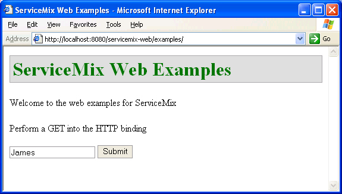

Introduction
Geronimo is the J2EE server project of the Apache Software Foundation. ServiceMix is being tightly integrated with Geronimo so that it takes advantage of it's deployment architecture and to leverage Geronimo to implement J2EE JBI bindings.
is the J2EE server project of the Apache Software Foundation. ServiceMix is being tightly integrated with Geronimo so that it takes advantage of it's deployment architecture and to leverage Geronimo to implement J2EE JBI bindings.
Note: The Geronimo deployment tool is currently under development, so this document is not complete, but is provided to give a preview of what is coming. This document will be completed when the underlying code is ready. If you are interested in this topic and how it progresses, please "watch" this page for future changes. To do so, click on "watch" in the upper right corner.
In the meantime, the ServiceMix on Geronimo deployment shown here is of the servicemix-web.war file. The Tomcat web application server is integrated with Geronimo as part of the Geronimo distribution. Therefore, when the servicemix-web.war file is deployed on Geronimo, it is being handed off to Tomcat by Geronimo. Additionally, the war file uses lightweight components, which are those components defined in a servicemix.xml file. Ultimately, the ServiceMix deployment on Geronimo will use heavyweight components. Heavyweight components accept service unit deployments, such as PXE.
The document is divided into two major sections. The first section discusses deploying ServiceMix on Geronimo. While the Geronimo deployment tool is under development this section shows how to deploy the ServiceMix web war file onto Geronimo. The second major section discusses how to deploy binding components and service engine components on ServiceMix, which is running on Geronimo.
The organization of this document is:
Geronimo Integration
The following guide explains how to deploy ServiceMix 2.0.x on the Geronimo application server.
Pre-Installation Requirements
- Java Developer Kit (JDK) 1.4.x or greater to run ServiceMix (to build ServiceMix, JDK 1.5.x or greater is required)
- The JAVA_HOME environment variable must be set to the directory where the JDK is installed, e.g. c:\Program Files\Java\jdk1.5.xx.
- Maven 1.0.2 or greater (required when installing source or developer releases).
- Geronimo version 1.0-M5 (Geronimo version 1.0-SNAPSHOT for deploying components)
- ServiceMix 2.0.x
The following platform was used to produce this deployment guide:
- Windows XP
- Geronimo 1.0-M5 (Geronimo 1.0-SNAPSHOT for component deployment)
- Java 5
- ServiceMix 2.0.x
Deploying ServiceMix on Geronimo
Execute the following steps to deploy ServiceMix on Geronimo. NOTE: This procedure will work on Unix platforms, as well as the Windows platform, with the appropriate substitutions, such as using the backslash ( / ) instead of the forward slash ( \ ).
- Geronimo must be downloaded and installed. For instructions please see the Geronimo web site. In the Geronimo release of geronimo-1.0-M5 or greater, Tomcat is integrated with Geronimo. By default, Tomcat uses port 8080. This information will be used later.
- Download the ServiceMix source code. Please see the Getting Started guide for instructions.
- Create the WAR file:
cd [servicemix_install_dir]\tooling\servicemix-web
maven war
where servicemix_install_dir is the directory in which ServiceMix was downloaded and installed. The war file can be found in [servicemix_install_dir]\tooling\servicemix-web\target\servicemix-web.war.
- To deploy the ServiceMix WAR file on Geronimo, use the Geronimo deployer.jar tool found in the bin directory of the Geronimo base directory.
From a command shell:
cd [geronimo_install_dir]
java -jar bin/deployer.jar --user system --password manager deploy [servicemix-2.0.x_install_dir]\tooling\servicemix-web\target\servicemix-web.war
You will see output similar to this:
Deployed servicemix-web @ http:
The output in the Geronimo console window should show ServiceMix starting. Output will be similar to the following. This WAR file was not developed for use on Geronimo, but for use on Tomcat stand-alone, therefore, it does not contain a geronimo-web.xml deployment plan. For using the servicemix-web.war file on Tomcat, please see Tomcat Integration.
...
Geronimo Application Server started
13:13:17,062 WARN [JettyModuleBuilder] Web application does not contain a WEB-INF/geronimo-web.xml deployment plan. This may or may not
a problem, depending on whether you have things like resource references that need to be resolved. You can also give the deployer a sep
te deployment plan file on the command line.
If Geronimo is restarted the console log will show ServiceMix starting, as shown below. Note: Geronimo does not need to be restarted to deploy the WAR file.
Booting Geronimo Kernel (in Java 1.5.0_05)...
Starting Geronimo Application Server
[*****************] 100% 45s Startup complete
Listening on Ports:
1099 0.0.0.0 RMI Naming
1527 0.0.0.0 Derby Connector
4201 0.0.0.0 ActiveIO Connector EJB
4242 0.0.0.0 Remote Login Listener
8019 0.0.0.0 Tomcat Connector AJP
8080 0.0.0.0 Jetty Connector HTTP
8090 0.0.0.0 Tomcat Connector HTTP
8443 0.0.0.0 Jetty Connector HTTPS
8453 0.0.0.0 Tomcat Connector HTTPS
61616 0.0.0.0 ActiveMQ Message Broker Connector
Started Application Modules:
EAR: org/apache/geronimo/Console/Jetty
WAR: org/apache/geronimo/applications/Welcome/Jetty
WAR: servicemix-web
Web Applications:
http: http: http: http:Geronimo Application Server started
NOTE: The console output is also logged in geronimo_install_dir\var\log\deployer.log.
Testing the ServiceMix Geronimo Deployment
To ensure that ServiceMix is running on Geronimo, do any of the following:
- Use Geronimo's "list-modules" option on deployer.jar to see the servicemix-web application:
cd [geronimo_install_dir]
java -jar bin/deployer.jar --user system --password manager list-modules
Output will be similar to:
Found 33 modules
+ org/apache/geronimo/Tomcat
+ org/apache/geronimo/Jetty
+ org/apache/geronimo/RMINaming
+ org/apache/geronimo/ActiveMQServer
+ org/apache/geronimo/TomcatRuntimeDeployer
+ org/apache/geronimo/Server
+ org/apache/geronimo/Security
+ servicemix-web @ http: + org/apache/geronimo/SystemDatabase
+ org/apache/geronimo/applications/Welcome/Jetty @ http: + org/apache/geronimo/SystemJMS
...
- ServiceMix's default port is 1099. From another window run netstat and search for port 1099.
From a Windows console, type:
OR
From a Unix command shell, type:
- Run the ServiceMix JMX Console. To do this, enter the following URL in a web browser: http://localhost:8080/servicemix-web:

- An http binding example is supplied. To run the example program perform the following steps:
- From a browser, enter the URL http://localhost:8080/servicemix-web/examples.

- Enter a name or some text in the text box (shown above) and click the Submit button. You will see:

Undeploying ServiceMix on Geronimo
Execute the following steps to undeploy ServiceMix from Geronimo.
- To undeploy the ServiceMix WAR file, use the Geronimo deployer.jar tool found in the bin directory of the Geronimo base directory.
From a command shell:
cd [geronimo_install_dir]
java -jar bin/deployer.jar --user system --password manager undeploy servicemix-web
The output in the Geronimo console window should show the ServiceMix WAR file being undeployed. Output will be similar to the following:
Module servicemix-web stopped.
Module servicemix-web unloaded.
Module servicemix-web uninstalled.
Undeployed servicemix-web
Deploying JBI Components
Components can be deployed on ServiceMix in various configurations. For example, components can be deployed on ServiceMix running stand-alone or components can be deployed on ServiceMix which itself is deployed on an application server such as Geronimo.
First some background. A JBI component is either a service engine (SE) or a binding component (BC). These terms are defined in Introduction to ESB and/or the Glossary. A BC/SE is installed on ServiceMix by copying it into the install directory which resides under the ServiceMix home directory. So what gets deployed? JBI components can act as containers themselves. Artifacts can be deployed to an existing BC or SE to add more functionality to that component. Adding artifacts to installed components is called deployment. To deploy artifacts to a component the artifacts can be placed in the deploy directory under the ServiceMix home directory. Another term that is important to know is service assembly. A service assembly is a collection of deployment artifacts and metadata. A service unit is a single deployment artifact which is deployed on a single component. For deployment to happen, the artifacts must be in a very specific format, which is specified in the JSR 208 specification. Please see chapter 6 of the JSR 208 specification for more details. In addition to deploying components, ServiceMix allows servicemix.xml files to be deployed in a similar method to deploying a component.
specification for more details. In addition to deploying components, ServiceMix allows servicemix.xml files to be deployed in a similar method to deploying a component.
Deploying JBI Components on ServiceMix Running Stand-Alone
This section is included to show how to deploy a ServiceMix component on ServiceMix running stand-alone. It is helpful to see how this deployment is done to build up to the deployment on Geronimo.
Note: These steps work on ServiceMix versions prior to 2.0, but it is now broken. Please see Jira issue: SM-154.
The following example shows a component "org.servicemix.components.servicemix.ServiceMixComponent" being deployed and then a service unit (Quartz) being deployed to the ServiceMixComponent. Note: that the service unit is a servicemix.xml file.
These steps were performed with a source distribution of ServiceMix 2.0.2 on Windows XP. The existing quartz binding example is modified in this example to turn it into a deployement unit.
- Modify the quartz binding servicemix.xml file to change it into a service unit. The servicemix.xml file is located in [servicemix_src_install_dir]\assembly\target\servicemix-2.0.2\bin\servicemix-2.0.2\examples\quartz-binding, where [servicemix_src_install_dir] is the directory in which the source distribution of ServiceMix is located.
- Create a directory elsewhere, such as \temp\JBIcomponent
- Copy servicemix.xml to \temp\JBIcomponent
- cd \temp\JBIcomponent
- Edit the servicemix.xml file. Change the "container" tags to "serviceunit" and save the file. The file should match the following:
<?xml version="1.0" encoding="UTF-8"?>
<beans xmlns="http:
xmlns:spring="http:
xmlns:sm="http:
xmlns:xsi="http:
xsi:schemaLocation="http: http: xmlns:my="http:>
<!-- the JBI container -->
<sm:serviceunit spring:id="jbi">
<sm:activationSpecs>
<!-- lets kick off a timer every 5 seconds -->
<sm:activationSpec componentName="timer" service="my:timer"
destinationService="my:trace">
<sm:component>
<bean xmlns="http:
class="org.servicemix.components.quartz.QuartzComponent">
<property name="triggers">
<map>
<entry>
<key>
<bean class="org.quartz.SimpleTrigger">
<property name="repeatInterval" value="5000" />
<property name="repeatCount" value="-1" />
</bean>
</key>
<bean
class="org.quartz.JobDetail">
<property name="name" value="My Example Job" />
<property name="group" value="ServiceMix" />
</bean>
</entry>
</map>
</property>
</bean>
</sm:component>
</sm:activationSpec>
<!-- Route the event to a trace component that just outputs the event to the console -->
<sm:activationSpec componentName="trace" service="my:trace">
<sm:component>
<bean xmlns="http:
class="org.servicemix.components.util.TraceComponent" />
</sm:component>
</sm:activationSpec>
</sm:activationSpecs>
</sm:serviceunit>
</beans>
This file will be used in a later step.
- Two jar files must be created. These jar files will be copied into the ServiceMix deploy directory. The first jar file will contain the service component jbi.xml file. When this is copied to the deploy directory it deploys the ServiceMixComponent component. The second jar file will contain the service assembly and the jbi.xml descriptor file. When it is copied to the deploy directory of ServiceMix it deploys the service unit (Quartz) to the previously deployed component, ServiceMixComponent.
- The file service component jbi.xml file should contain:
<jbi xmlns="http:
xmlns:xsi="http:
xsi:schemaLocation="http:
version="1.0">
<component type="service-engine">
<identification>
<name>servicemix-component</name>
<description>A ServiceMix Component that can be used to deploy servicemix.xml artifacts.</description>
</identification>
<component-class-name>org.servicemix.components.servicemix.ServiceMixComponent</component-class-name>
<component-class-path/>
</component>
</jbi>
- Put jbi.xml in an empty META-INF directory and put that into a jar file:
mkdir META-INF
copy jbi.xml META-INF
jar cvf service-component.jar *
- Create a zip file of the servicemix.xml file you modified above. The zip file should contain the servicemix.xml file and it should be called su1.zip to match the name it is called in the jbi.xml file. See the artifacts-name tag in the jbi.xml file for the name of the zip file.
- Create the second jar file--this is the service assembly jar file. It will contain another jbi.xml file that is used for the service assembly and it will also contain the zip file, su1.zip in the following structure:
The service assembly jbi.xml should be match the following:
<jbi xmlns="http:
xmlns:xsi="http:
xsi:schemaLocation="http:
version="1.0">
<service-assembly>
<identification>
<name>AU_1</name>
<description>Sample AU</description>
</identification>
<service-unit>
<identification>
<name>SU_1</name>
<description>Sample</description>
</identification>
<target>
<artifacts-zip>su1.zip</artifacts-zip>
<component-name>servicemix-component</component-name>
</target>
</service-unit>
</service-assembly>
</jbi>
Copy the jbi.xml file to an empty META-INF directory, then create the jar file:
In a directory which contains these files, create the jar file:
META-INF/jbi.xml
su1.zip
jar cvf sa_quartz.jar *
- Deploy the two jar files. Copy service_component.jar and sa_quartz.jar to [servicemix_src_install_dir]\assembly\target\servicemix-2.0.\bin\servicemix-2.0.2\deploy. This can be done while ServiceMix is running or while ServiceMix is not running. In the second case, run ServiceMix to see the deployment. Output will be similar to:
ServiceMixComponent: deploy
ServiceMixComponent: init: SU_1 path: C:\tmp1\servicemix-1.1-SNAPSHOT\target\servicemix-1.1-SNAPSHOT\bin\servicemix-1.1-SNAPSHOT\bin\..\wdir
\defaultJBI\components\servicemix-component\serviceunit\SU_1
[INFO] XmlBeanDefinitionReader - -Loading XML bean definitions from URL [file:C:/tmp1/servicemix-1.1-SNAPSHOT/target/servicemix-1.1-SNAPSHOT
/bin/servicemix-1.1-SNAPSHOT/bin/../wdir/defaultJBI/components/servicemix-component/serviceunit/SU_1/servicemix.xml]
...
[INFO] DefaultListableBeanFactory - -Creating shared instance of singleton bean 'jbi'
ServiceMixComponent: start: SU_1
[INFO] JBIContainer - -Activating component for: [container=defaultJBI,name=timer,id=timer] with service: {http: component: org.servicemix.components.quartz.QuartzComponent@1ecfe07
[INFO] SimpleThreadPool - -Job execution threads will use class loader of thread: main
[INFO] RAMJobStore - -RAMJobStore initialized.
[INFO] StdSchedulerFactory - -Quartz scheduler 'DefaultQuartzScheduler' initialized from default resource file in Quartz package: 'quartz.pr
operties'
[INFO] StdSchedulerFactory - -Quartz scheduler version: 1.4.0
[INFO] ComponentContextImpl - -Component: timer activated endpoint: {http:[INFO] JBIContainer - -Activating component for: [container=defaultJBI,name=trace,id=trace] with service: {http: component: org.servicemix.components.util.TraceComponent@8b8a47
[INFO] ComponentContextImpl - -Component: trace activated endpoint: {http:[INFO] DeploymentService - -Deployed ServiceUnit SU_1 to Component: servicemix-component
[INFO] AutoDeploymentService - -Unpacked archive C:\tmp1\servicemix-1.1-SNAPSHOT\target\servicemix-1.1-SNAPSHOT\bin\servicemix-1.1-SNAPSHOT\
bin\..\deploy\comp.jar to C:\tmp1\servicemix-1.1-SNAPSHOT\target\servicemix-1.1-SNAPSHOT\bin\servicemix-1.1-SNAPSHOT\bin\..\wdir\defaultJBI\
tmp\comp.0.tmp
[INFO] XmlBeanDefinitionReader - -Loading XML bean definitions from URL [file:/C:/tmp1/servicemix-1.1-SNAPSHOT/target/servicemix-1.1-SNAPSHO
T/bin/servicemix-1.1-SNAPSHOT/bin/../wdir/defaultJBI/tmp/comp.0.tmp/META-INF/jbi.xml]
...
[INFO] DefaultListableBeanFactory - -Creating shared instance of singleton bean 'jbi'
[INFO] AutoDeploymentService - -Unpacked archive C:\tmp1\servicemix-1.1-SNAPSHOT\target\servicemix-1.1-SNAPSHOT\bin\servicemix-1.1-SNAPSHOT\
bin\..\deploy\sa_quartz.jar to C:\tmp1\servicemix-1.1-SNAPSHOT\target\servicemix-1.1-SNAPSHOT\bin\servicemix-1.1-SNAPSHOT\bin\..\wdir\defaul
tJBI\tmp\sa_quartz.0.tmp
[INFO] XmlBeanDefinitionReader - -Loading XML bean definitions from URL [file:/C:/tmp1/servicemix-1.1-SNAPSHOT/target/servicemix-1.1-SNAPSHO
T/bin/servicemix-1.1-SNAPSHOT/bin/../wdir/defaultJBI/tmp/sa_quartz.0.tmp/META-INF/jbi.xml]
[INFO] FileSystemXmlApplicationContext - -Bean factory for application context [org.springframework.context.support.FileSystemXmlApplication
[INFO] JBIContainer - -ServiceMix JBI Container (http:[INFO] DeliveryChannel - -default destination serviceName for timer = {http:[INFO] QuartzScheduler - -Scheduler DefaultQuartzScheduler_$_NON_CLUSTERED started.
[INFO] TraceComponent - -Exchange: org.servicemix.jbi.messaging.InOnlyImpl@a7dd39 received IN message: org.servicemix.jbi.messaging.Normaliz
edMessageImpl@acdd02{properties: {org.servicemix.quartz.context=JobExecutionContext: trigger: 'ServiceMix.My Example Job job: ServiceMix.My
Example Job fireTime: 'Thu Dec 08 14:15:06 PST 2005 scheduledFireTime: Thu Dec 08 14:15:05 PST 2005 previousFireTime: 'null nextFireTime: Th
u Dec 08 14:15:06 PST 2005 isRecovering: false refireCount: 0, org.servicemix.quartz.detail=JobDetail 'ServiceMix.My Example Job': jobClass
: 'org.servicemix.components.quartz.ServiceMixJob isStateful: false isVolatile: false isDurable: false requestsRecovers: false, org.servicem
ix.component=org.servicemix.components.quartz.QuartzComponent@1ecfe07}}
[INFO] TraceComponent - -Body is: <?xml version="1.0" encoding="UTF-8"?><timer><name>My Example Job</name><group>ServiceMix</group><fullname
>ServiceMix.My Example Job</fullname><description/><fireTime>Thu Dec 08 14:15:06 PST 2005</fireTime></timer>
[INFO] TraceComponent - -Exchange: org.servicemix.jbi.messaging.InOnlyImpl@19ecd80 received IN message: org.servicemix.jbi.messaging.Normali
zedMessageImpl@c5aa00{properties: {org.servicemix.quartz.context=JobExecutionContext: trigger: 'ServiceMix.My Example Job job: ServiceMix.My
Example Job fireTime: 'Thu Dec 08 14:15:06 PST 2005 scheduledFireTime: Thu Dec 08 14:15:06 PST 2005 previousFireTime: 'Thu Dec 08 14:15:05
PST 2005 nextFireTime: Thu Dec 08 14:15:06 PST 2005 isRecovering: false refireCount: 0, org.servicemix.quartz.detail=JobDetail 'ServiceMix.M
y Example Job': jobClass: 'org.servicemix.components.quartz.ServiceMixJob isStateful: false isVolatile: false isDurable: false requestsReco
vers: false, org.servicemix.component=org.servicemix.components.quartz.QuartzComponent@1ecfe07}}
[INFO] TraceComponent - -Body is: <?xml version="1.0" encoding="UTF-8"?><timer><name>My Example Job</name><group>ServiceMix</group><fullname
>ServiceMix.My Example Job</fullname><description/><fireTime>Thu Dec 08 14:15:06 PST 2005</fireTime></timer>
Deploying Components on servicemix-web.war
This section is on hold until the Jira issue: is fixed.
Deploying JBI Components on Geronimo Using the Geronimo Deployment Tool
This section discusses using the Geronimo deployment tool to deploy components. This is separate from the previous sections
dealing with the servicemix-web.war file. When the deployment tool is fully developed this will be the preferred method.
Currently only geronimo-1.0-SNAPSHOT can be used to perform this method.
The JBI spec describes in detail how to create a valid JBI deployment unit. In essence, it is a jar file with a META-INF/jbi.xml with other resource jars inside it. Please see Deployment Units for more information.
- Make sure that your geronimo server is running.
- Run the geronimo deploy tool against your deployment unit (in this case jbcomponent.jar):
java -jar geronimo-1.0-SNAPSHOT/bin/deployer.jar --user system --password manager deploy jbcomponent.jar
That should deploy the component to geronimo. To check, just take a look at the geronimo logs for a message similar to:
11:44:24,865 INFO [Configuration] Started configuration example-engine-1
11:44:24,869 INFO [ServiceMixDeployment] Starting: /Users/chirino/sandbox/geronimo/modules/assembly/target/geronimo-1.0-SNAPSHOT/config-store/20/META-INF/jbi.xml
...
11:44:25,783 INFO [DefaultListableBeanFactory] Creating shared instance of singleton bean 'jbi'
Related Documentation
Status
Please monitor the Jira issue SM-140 to get currrent information on the Geronimo deployer for ServiceMix.
Please monitor the Jira issue SM-154 to get current information on the component deployment bug.